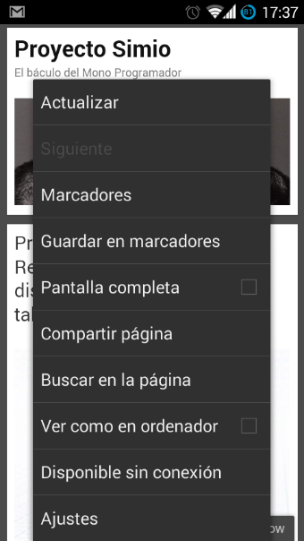
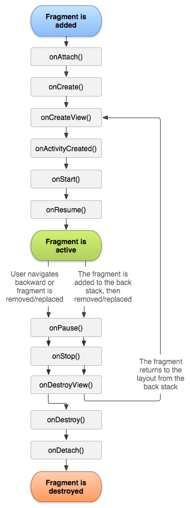
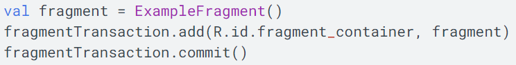

Título: Menús y Fragmentos
Menús
Los menús son un componente común de la interfaz de usuario en muchos tipos de aplicaciones. Para proporcionar una experiencia de usuario conocida y uniforme, se debe usar las API de Menu a fin de presentar al usuario acciones y otras opciones en las actividades.
Existen tres tipos de menús en Android Studio: menú de opciones, menú contextual, menú emergente. El más común es el menú de opciones, sin embargo, su uso depende de la necesidad del desarrollador, pudiendo tener en una misma actividad los tres menús sin problema alguno.
Menú de opciones y barra de app
El menú de opciones es la colección principal de elementos de menú de una actividad. Es donde se debe colocar las acciones que tienen un impacto global en la app, como “Buscar”, “Redactar correo electrónico” y “Configuración”.
Menú contextual y
Modo de acción contextual
Un menú contextual es un menú flotante que aparece cuando el usuario hace un clic largo en un elemento. Proporciona acciones que afectan el contenido seleccionado o el marco contextual.
En el menú de acción contextual, se muestran los elementos de acción que afectan al contenido seleccionado en una barra en la parte superior de la pantalla y permite al usuario seleccionar varios elementos.
Menú emergente (popup)
Un menú emergente muestra una lista de elementos en una lista vertical que está anclada a la vista que invocó el menú. Es adecuado para proporcionar una ampliación de acciones relacionadas con contenido específico o para proporcionar opciones en una segunda parte de un comando.
Las acciones en un menú emergente no deben afectar directamente al contenido correspondiente, ya que para eso están las acciones contextuales. En cambio, el menú emergente es para acciones extendidas relacionadas con partes del contenido de la actividad.

Definir un menú:
Para todos los tipos de menús, Android proporciona un formato XML estándar que permite definir los elementos de menú. En lugar de incorporar un menú en el código de la actividad, se debe definir un menú y todos los elementos en un recurso de menú XML. Para definir el menú, crear un archivo XML dentro del directorio res/menu/ del proyecto y desarrollar el menú con los siguientes elementos:
< menu>
Define un Menu, que es un contenedor para elementos de menú. Un elemento < menu > debe ser el nodo raíz del archivo y puede tener uno o más elementos < item > y < group > .
< item>
Crea un MenuItem, que representa un único elemento en un menú. Este elemento puede contener un elemento < menu > anidado para crear un submenú.
< group>
Contenedor opcional e invisible para elementos
< item >
. Permite categorizar los elementos de menú para que compartan propiedades, como el estado de una actividad o visibilidad.
Ejemplo:
Fragmentos:
Un fragmento representa un comportamiento o una parte de la interfaz de usuario en una FragmentActivity. Se puede combinar varios fragmentos en una sola actividad para crear una interfaz de usuario multipanel y volver a usar un fragmento en diferentes actividades. Puedes pensar en un fragmento como una sección modular de una actividad que tiene un ciclo de vida propio, que recibe sus propios eventos de entrada y que puedes agregar o quitar mientras la actividad se esté ejecutando.

Un fragmento siempre debe estar alojado en una actividad y el ciclo de vida del fragmento se ve afectado directamente por el ciclo de vida de la actividad anfitriona. Por ejemplo, cuando la actividad está pausada, también lo están todos sus fragmentos, y cuando la actividad se destruye, lo mismo ocurre con todos los fragmentos. Sin embargo, mientras una actividad se está ejecutando, se puede manipular cada fragmento de forma independiente, por ejemplo, para agregarlo o quitarlo.
Cuando se agrega un fragmento como parte de la presentación de la actividad, se encuentra en ViewGroup dentro de la jerarquía de vistas de la actividad y el fragmento define su propio diseño de vistas. Se puede insertar un fragmento en el diseño de la actividad declarando el fragmento en el archivo de diseño, como elemento < fragment > , o desde el código de la aplicación agregándolo a un archivo existente ViewGroup.
Crear un fragmento:
onCreate()
El sistema lo llama cuando crea el fragmento.
Se debe inicializar componentes esenciales del fragmento que se quiera conservar cuando el fragmento se pause o se detenga, y luego se reanude.
onCreateView()
El sistema lo llama cuando el fragmento debe diseñar su interfaz de usuario por primera vez.
A fin de diseñar una IU para el fragmento, se debe mostrar un View desde este método, que será la raíz del diseño del fragmento.
onPause()
El sistema llama a este método como el primer indicador de que el usuario está abandonando el fragmento.
Generalmente, este es el momento en el que deben ser confirmados los cambios que se conservarán más allá de la sesión de usuario actual porque es posible que el usuario no vuelva.

Cómo agregar un fragmento a una actividad:
Declarar el fragmento en el archivo de diseño de la actividad. En este caso, se puede especificar propiedades de diseño para el fragmento como si fueran una vista.
Guardar el fragmento de forma programática en un ViewGroup existente. Mientras la actividad se está ejecutando, se puede agregar fragmentos al diseño. Solo se debe especificar un ViewGroup en el que se colocará el fragmento. Para realizar transacciones de fragmentos como agregar, quitar o reemplazar un fragmento, se debe usar las API de FragmentTransaction.
Luego, agregar el fragmento usando el método add() y especificando el fragmento que se agregará, así como la vista en la que se insertará.
